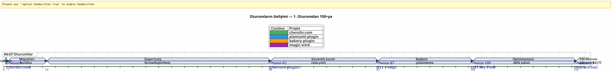
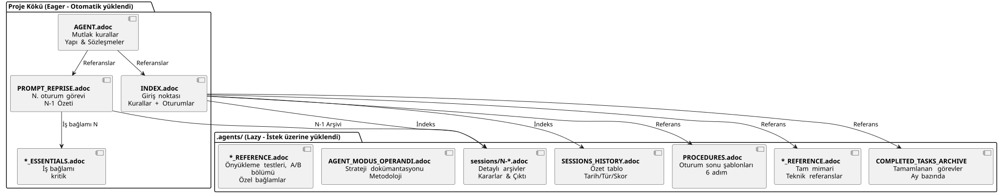
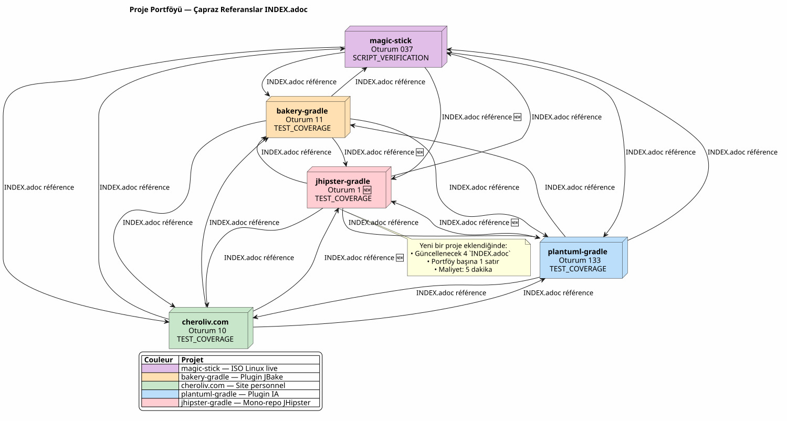
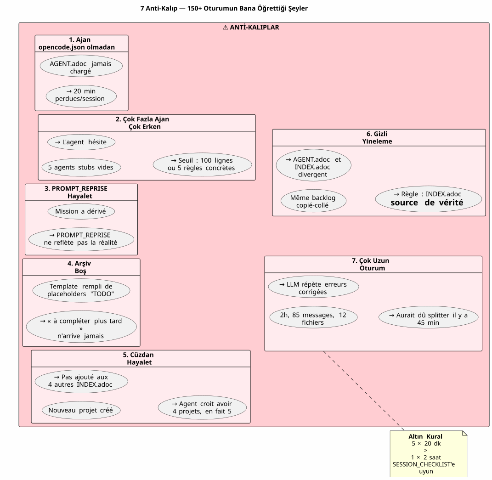

AsciiDoc ile Bir Yapay Zeka Ajanını Yönetmek: Bağlam Sızıntısı Olmayan Opencode Oturumları için Eager/Lazy Stratejim
Yayınlandı: 24 April 2026
Özet
Opencode gibi bir yapay zeka ajanı ile birden fazla oturum boyunca karmaşık projeler üzerinde çalışıldığında, temel bir sorunla karşı karşıya kalınır:bağlam sızıntısı. Agent önceki oturumu hatırlamaz. Ona açıklanan her şey — mimari, sözleşmeler, backlog durumu — kaybolur. Bu bağlamı her oturumda yeniden oluşturmak maliyetli, yavaş ve hata kaynağıdır.
Bu makale, bu sorunu çözmek için oluşturduğum zanaatkar stratejiyi ortaya koymaktadır: AsciiDoc dosyalarına dayalı kalıcı bir yönetişim sistemi ve bir dikotomiİstekli/Tembelbağlam token tüketimini optimize etmek için ve birzorunlu oturum kapatma prosedürüsürekliliği sağlamak için.
Sahne: 21 Nisan Pazartesi, 09:00
Gradle eklentime devam etmek için Opencode’u yeniden açıyorum`plantuml-plugin`Dün akşam, API anahtar havuzu mimarisiyle — round-robin rotasyonu, kota yönetimi, otomatik fallback — ilgili ajanla tartışarak üç saat geçirdim. Bu sabah ajan bana japon balığı gözleriyle bakıyor.
Lütfen çevrilecek metni sağlayın. — Merhaba, ben Opencode asistanınızım. Bugün size nasıl yardımcı olabilirim? Lütfen çevirmek istediğiniz metni sağlayın.
Hayır — Ah evet, API anahtar havuzu, YAML yapısındaydık. Hayır — Dikkat,PlantumlManager`bir Kotlin singleton nesnesidir, bir sınıf değil. — Hayır, dün karar verdik ki`SyntaxValidationResult`bir `sealed class nested olarak kalmıştı`PlantumlService`Lütfen çevirmek istediğiniz metni gönderin.
Her şey yeniden yapılacak. Ya da daha doğrusu: her şey yeniden açıklanacak. Oturumun ilk yirmi dakikasını, ajanın dün elinde olan bir bağlamı yeniden kurmaya harcayacağım. Yakılmış yirmi dakikalık token. Kod yazabileceğim ama zorunlu pedagoji yaptığım yirmi dakika.
Bu bir Opencode hatası değil. Konuşmalı LLM’lerin doğası budur: iki oturum arasında, çalışma belleğitamamen silinmiş. Agent önceki görevi, alınan kararları, tespit edilen tuzakları ve birlikte yazdığımız code kısmını hatırlamıyor.
Bunu onlarca kez yaşadım. Eş zamanlı dört projede. Haftalarca süren art arda oturumlarla. Hesapladım: ortalamada,oturum süresinin %30 ila %40’ıajanın yeniden bağlamlandırılmasına ayrılmıştı. Projenin 87. oturumunda`plantuml-plugin`, peslendim. Onuncu kez şunu yeniden açıklamaya artık tahammülüm kalmamıştı:`AttemptEntry`şurada top-level bir data class’tır`DiagramProcessor.kt`Lütfen çevrilecek metni sağlayın.
Bir sisteme ihtiyacım vardı. Bir hack’e değil. Gerçek bir yönetişime.
Yaratılış: Kaostan Metoda
İlk Oturumlar: Karanlık Çağ
Opencode ile ilk projem,plantuml-plugin, hiçbir yönetişim olmadan başladı. Ben bir soru soruyorum, ajan yanıtlıyor, yinelemeler yapıyoruz, oturum sona eriyor ve ertesi gün her şeye sıfırdan başlıyoruz. Bu 1. oturumdu, sonra 2, sonra 3… 62. oturuma gelene kadar, aynı mimariyi tekrar tekrar anlatmak için toplamda saatler kaybettiğimi fark ettim.
-
oturumda rakamlar ortada:198 birim testi geçti, 42 fonksiyonel test doğrulandı, eklenti çalışıyor. Ancak bilişsel maliyet dayanılmaz. Her yeni oturum, proje yapısı üzerine yirmi dakikalık bir monologla başlıyor.
Yıkılan site.yml Bölümü (Oturum 2, bakery-plugin)
Yöntem aynı zamanda bir felaketten doğmuştur. Proje üzerinde`bakery-gradle`, 2. oturumda, agent’tan dosyayı değiştirmesini istiyorum`site.yml`. Ajan, dosyanın versiyonlanıp versiyonlanmadığını kontrol etmeden bir`Write`içeriğin üzerine yazan tam bir sonuç. Sonuç: gerçek token’lar (Firebase API anahtarları, dağıtım sırları) sahte yer tutucularla değiştirilir. Dosya git içinde değildi — şuradaydı`.gitignore`sırları korumak için.
Yedeksiz.`git restore`mümkün. Tıkandım. Yapılandırma dosyasını manuel olarak yeniden oluşturmam, şifre yöneticilerimdeki token’ları bulmam ve her şeyi tekrar birleştirmem gerekiyor.
İşte bu hayal kırıklığından doğan…Mutlak Kural 1bLütfen çevrilecek metni sağlayın.
Lütfen tercüme edilecek metni sağlayın. ASLA üzerine yazmayınbir config dosyası ile bir`Write`tamamlandığında bir`Edit`kısmi yeterlidir.ASLA değiştirmeyinhassas değerlerin sahte değerlerle değiştirilmesi.git check-ignore` ve git ls-files komutlarını kontrol edinherhangi bir değişiklik yapmadan önce. Lütfen çevirmek istediğiniz metni sağlayın.
Bugün tüm dosyalarımın mermerine kazınmış olan bu kural`AGENT.adoc` et `INDEX.adoc`dört projeden birinde, bana bir saatlik manuel çalışma maliyetine mal olan gerçek bir hatadan doğmuştur.
Markdown → AsciiDoc Migrasyonu (Oturum 1, cheroliv.com)
25 Nisan 2026’da,cheroliv.com, radikal bir karar alıyorum: yönetişimin tamamını Markdown’dan AsciiDoc’a dönüştürmek. Bu estetik bir tercih değil. İşlevsel bir tercih. AsciiDoc, LLM’lerin daha iyi okuduğu anlamsal bir yapı sunuyor: hiyerarşik bölümler, tiplendirilmiş tablolar, uyarılar (NOTE, WARNING, CAUTION), makine tarafından okunabilir belge öznitelikleri.
-
oturumu`cheroliv.com`yapıyı formülize et:
-
Dönüştürme`AGENTS.md` en
AGENT.adoc -
Uzman ajanların oluşturulması:`CODER.adoc`,
SCRUM_MASTER.adoc,PLANTUML_DESIGNER.adoc -
Eager/Lazy yapısının oluşturulması:`INDEX.adoc`,
SESSIONS_HISTORY.adoc,AGENT_SESSION_MANAGER.adoc,SESSION_CHECKLIST.adoc,PROCEDURES.adoc
-
Tek bir commit:`90975e9 refactor: migrate agent governance from Markdown to AsciiDoc`. Ve site ise çalışmaya devam ediyor.

Yukarıdaki zaman çizelgesi gerçek ilerlemeyi göstermektedir. Kırılma noktası 87. oturumdur: tekrarlanan yeniden bağlamlandırmanın yarattığı hayal kırıklığının tolerans eşiğini aştığı ve Eager/Lazy yönteminin bir fikir olmaktan çıkıp bir zorunluluk haline geldiği yer burasıdır.
Strateji: Eager/Lazy Derinlemesine Bakış
Felsefe: Bilişe Uygulanmış Bilişim Önbelleği
Yaklaşımım, doğrudan bilgisayar önbellek yönetiminden ilham alıyor. Şunların tamamıeleştirel ve sıkça kullanılanhemen erişilebilir olmalıdır (Hevesli). Tüm olanlarbağlamsal veya hacimliisteğe bağlı olarak yüklenmelidir (Tembel).
Eager (Kontrol Paneli) |
Lazy (Sahip Kılavuzu) |
Boyut |
< 100 satır, < 10k token |
Sınırsız, detaylı |
Yükleniyor |
Otomatik, oturum başlangıcında |
Temsilcinin talebi üzerine |
İçerik |
Mutlak kurallar, güncel görev, kritik durum |
Oturum arşivleri, tam geçmiş, ayrıntılı prosedürler, teknik referanslar |
Rol |
Ajanı derhal yönlendir |
Derin bağlam sorularını yanıtlamak |
Eager Dosyaları: Kontrol Paneli
Bu dosyalar her projenin kök dizininde yer alır ve her oturumun başında aracı tarafından otomatik olarak yüklenir. Bunlar şunları oluşturur:kontrol paneli-- kritik bilgi, anında erişilebilir.

AGENT.adoc-- Ana dosya. Üzerinde`cheroliv.com`, 200 satırdır ve şunları içerir:
-
Projenin kesin kuralları (izinsiz commit yok, yok`rm`(onaylama olmadan)
-
Proje yapısı ve kod kuralları
-
Temel komutlar (
./gradlew serve,./gradlew test) -
Epikler ve ürün backlog’u (önceliklendirilmiş kullanıcı hikayeleri)
-
Yatay kalite kriterleri (erişilebilirlik, responsive, uyumluluk)
Üzerinde`bakery-plugin`, Kural 0 farklıdır:Her kaynak kodu değişikliğinden sonra ./gradlew -q publishToMavenLocal zorunludur. Çünkü yerel JAR’ı yeniden yayınlamadan eklentiyi test etmek, henüz paketlenmemiş bir kodu hata ayıklamak için bir saat kaybetmeme neden oldu.
PROMPT_REPRISE.adoc-- Mevcut oturumun görevi. Her oturum sonunda güncellenir ve şunları içerir:
-
Oturum numarası ve öncelikli görev
-
Önceki oturumun özeti (nelerin yapıldığı, nelerin yapılması gerektiği)
-
Geçerli oturumun kabul kriterleri
-
Özel teknik hatırlatıcılar
.agents/INDEX.adoc-- Giriş noktası. Mutlak kuralları, son oturumları ve özellikle de şunları özetler:proje portföyüaynı metodoloji ile yönetiliyor. Bugüne kadar beş proje yer almaktadır:
----
| magic-stick | Session 23 | SCRIPT_VERIFICATION.adoc | 2026-04-27 |
| bakery-gradle | Session 11 | TEST_COVERAGE_ANALYSIS | 2026-04-27 |
| cheroliv.com | Session 9 | TEST_COVERAGE_ANALYSIS | 2026-04-27 |
| plantuml-gradle| Session 133| TEST_COVERAGE_ANALYSIS | 2026-04-23 |
| jhipster-gradle-plugins | Session 1 | TEST_COVERAGE_ANALYSIS | 2026-04-28 |
----
**`*_ESSENTIALS.adoc`** -- Eager bağlamını daha da optimize etmek için yapılan yeni bir ekleme (Oturum 109, plantuml-plugin). API anahtar havuzu üzerindeki 200 satırlık iş bağlamını yüklemek yerine, temel olan 50 satırı yüklüyorum ve diğer 150 satır şurada LAZY olarak kalıyor:`*_REFERENCE.adoc`Lütfen çevrilecek metni sağlayın.
Ölçülen sonuç: geçişi**~25k token EAGER'dan ~10k token'a**(%60 kazanç). Aracının artık enerji tüketen hatırlatıcılara ihtiyacı yok.
==== Kayıp Halka: `opencode.json
Size bellemek zorunda olduğum, neredeyse belgelemeyi unuttuğum bir şey var. Tüm bu `.adoc` dosyalarının üzerinde, o olmadan hiçbir şeyin çalışmadığı küçücük bir JSON dosyası var. Adı`opencode.json`ve altı satır sürüyor. Kelimenin tam anlamıyla altı satır.
[source,json]
----
{
"$schema": "https://opencode.ai/config.json",
"instructions": [
"AGENT.adoc"
]
}
----
Opencode'a şunu söyleyen dosya budur: « Başlangıçta, yükle`AGENT.adoc`otomatik olarak. » O olmadan, ajan tam da makalenin başında tarif ettiğim gibi boş bir sayfadır. Onunla birlikte ajan; ben daha merhaba bile demeden, kesin kuralları, proje mimarisini ve temel komutları çoktan eline almış olur.
Bu dosyanın önemini tesadüfen keşfettim. Üzerine`bakery-plugin`, mevcut değildi. Aracının bu projede neden diğerlerine göre sistematik olarak daha «kaybolmuş» olduğunu merak ediyordum. Mutlak kurallar şuradaydı:`AGENT.adoc`— fakat`AGENT.adoc`asla yüklenmemişti. Ajan, her oturumda sadece ona okumasını söylediğim şeyleri manuel olarak okuyordu. Bu, 11. oturumdu`bakery-plugin`yokluğunu fark ettiğimde`opencode.json`. Onu oluşturdum — ve 12. oturum diğerleri gibi başladı.
Bu dosya benim için artık o kadar aşikar ki, onu düşünmeyi bile bırakmıştım. Aracını çok iyi tanıyan geliştiricinin yaptığı klasik bir hata. Artık bunu sistematik olarak *önceden* oluşturuyorum`AGENT.adoc`. Bu ilk taş.
==== INDEX.adoc`'un İkiliği
Açıklanması gereken bir başka incelik:`INDEX.adoc`yaşıyor`.agents/`— LAZY olarak sunduğum bir dosya. Yine de, tüm tablolarımda onu EAGER olarak listeliyorum. Burada görünür bir gerilim var.
Saha gerçekliği: dosyalar`.agents/INDEX.adoc`oturum başında, tıpkı ... gibi otomatik olarak yüklenirler`AGENT.adoc` et `PROMPT_REPRISE.adoc`. Onlar şunların içindeler`.agents/`organizasyonel nedenlerle — kök dizini işgal etmemek için — ancak davranışları EAGER'dır.
Üzerinde`plantuml-plugin`, `INDEX.adoc`200 satır uzunluğundadır ve geçmiş oturumlardan alınan derslerle birlikte *tam* kesin kuralları, puanlarıyla beraber EPIC'leri ve proje portföyünü içerir. Bu, ajanın «nerede kaldığımızı» bilmek için başvurduğu belgedir. Üzerine`bakery-plugin`, yol haritası ve son oturumlarla birlikte 150 satır sürüyor.
arasındaki kasıtlı gereksiz tekrarlar`AGENT.adoc` et `INDEX.adoc`şaşırtabilir. Mutlak kurallar her ikisinde de mevcuttur. Neden mi? Çünkü iki farklı rol üstlenirler: şurada`AGENT.adoc`, bunlar *açıklayıcıdır* (kuralın hikayeleştirilmesi, çıkarılan ders); içindeki`INDEX.adoc`, bunlar *yürütücü* niteliktedir (hızlı bir danışma için gerekçesiz, yalın kural). Ajan okur`AGENT.adoc`bir kez *anlamak* için; tekrar okur`INDEX.adoc`her oturumda *uygulamak* için. İki kullanım, iki format.
[plantuml, format=svg, id=diag-dualite-agent-index, alt="Comparaison entre AGENT.adoc (narratif) et INDEX.adoc (exécutif)"]
----
@startuml
skinparam backgroundColor #FEFEFE
skinparam defaultTextAlignment center
title AGENT.adoc ←→ INDEX.adoc Dualitesi
left to right direction
rectangle "AGENT.adoc\n(Kök — EAGER)" as AGENT #E3F2FD {
rectangle "📖 **Anlatı Formatı**\nKuralın hikayeleştirmesi\nçıkarılan ders, bağlam" as NARR
rectangle "🏗️ **Tam Mimari**\nProje yapısı, bileşenler\nDetaylı US Backlog'u" as ARCHI
rectangle "📋 **Açıklayıcı Kurallar**\nKuralın var olma nedeni\nOlay geçmişi" as EXPL
}
rectangle "INDEX.adoc\n(.agents/ — EAGER)" as INDEX #E8F5E9 {
rectangle "⚡ **Yönetici Formatı**\nÇıplak kural, gerekçelendirme olmadan\nHızlı danışma" as EXEC
rectangle "📊 **Yol Haritası & EPIC'ler**\nÖzet tablo\nİlerleme, Skor, Öncelik" as ROAD
rectangle "🌐 **Proje Portföyü**\nEnine görünüm\nSenkronize 5 proje" as PORT
}
AGENT --> INDEX : "Agent AGENT.adoc dosyasını okur\n**anlamak** için 1 kez"
INDEX --> AGENT : "Agent INDEX.adoc dosyasını tekrar okur\n**uygulamak** için her oturumda"
note bottom of AGENT
Maksimum boyut: 200 satır
end note
note bottom of INDEX
Maksimum boyut: 200 satır
Source de vérité en cas de divergence
end note
@enduml
----
Bu bilinçli redundans bir tasarım tercihidir. Yaklaşık 50 satırlık ek EAGER token tüketir; ancak ajanın, anında itaati kolaylaştıran kısa format da dahil olmak üzere, kuralları her zaman göz önünde bulundurmasını garanti eder.
=== LAZY Dosyaları: Sahip El Kitabı
Bu dosyalar şurada yer alır`.agents/`ve sadece ajanın ihtiyaç duyduğunda okunurlar. Mevcut bağlamı kirletmeden proje bilgisini biriktirdikleri için metodun asıl zenginliğini oluştururlar.
[plantuml, format=svg, id=diag-agents-tree, alt="Arborescence complète du dossier .agents/"]
----
@startuml
skinparam folderBackgroundColor #E3F2FD
skinparam folderBorderColor #1565C0
skinparam fileBackgroundColor #FFF3E0
skinparam fileBorderColor #EF6C00
folder ".agents/" as ROOT {
file "INDEX.adoc\n(EAGER -- 200 satır)" as IDX #E8F5E9
file "AGENT_SESSION_MANAGER.adoc\n(Oturum şablonu)" as ASM
file "SESSION_CHECKLIST.adoc\n(Ne zaman değiştirilmeli)" as CHK
file "PROCEDURES.adoc\n(6 adım + LAZY/EAGER)" as PRO
file "SESSIONS_HISTORY.adoc\n(Tüm oturumlar)" as HIS
folder "sessions/" as SESS {
file "1-chore-migration.adoc" as S1
file "109-formalisation-lazy.adoc" as S109 #FFECB3
file "133-epic11-article.adoc" as S133
file "... +130 diğer" as SMORE
}
folder "archives/" as ARCH {
file "COMPLETED_TASKS_2026-04.adoc" as CTA
file "SESSIONS_HISTORY_83-95.adoc" as SHIST
folder "sessions_summaries/" as SUM {
file "SESSION_64_SUMMARY.adoc" as SU64
file "SESSION_73_SUMMARY.adoc" as SU73
file "..." as SUMORE
}
folder "prompts_archive/" as PARCH {
file "PROMPT_REPRISE_S65.adoc" as PR65
file "PROMPT_REPRISE_S75.adoc" as PR75
file "..." as PMORE
}
}
}
IDX --> SESS : "Dizin"
IDX --> HIS : "Dizin"
IDX --> ARCH : "Referans"
note right of S109
Oturum 109 =
Strateji formalizasyonu
LAZY/EAGER
Token : ~25k → ~10k
end note
@enduml
----
Yukarıdaki dizin yapısı, klasörün gerçek yapısını göstermektedir`.agents/`üzerine`plantuml-plugin`, en olgun proje. Üç katmanlı derinliğe dikkat edin: kök dosyalar (meta veriler), klasör`sessions/`(kronolojik arşivler) ve dosya`archives/`(toplamalar ve özetler). TODO dosyasının basit bir yönetimini bir ...'ye dönüştüren şey işte bu derinliktir**kapsamlı kurumsal hafıza**Lütfen çevrilecek metni sağlayın.
**.agents/sessions/{N}-{titre}.adoc**-- Her oturumun detaylı arşivleri. Şu anda:
* `plantuml-plugin`Lütfen çevrilecek metni sağlayın.**133 arşivlenmiş oturum**(1'den 133'e kadar olan oturumlar)
* `bakery-plugin`Lütfen çevrilecek metni sağlayın.**11 oturum**
* `magic-stick`Lütfen çevrilmesini istediğiniz metni sağlayın.**23 oturum**
* `cheroliv.com`Lütfen çevrilecek metni sağlayın.**9 resmi oturum**+ geriye dönük olarak yeniden oluşturulmuş 7 sistem öncesi oturum
Her arşiv; oturumun tam bağlamını, alınan kararları, karşılaşılan sorunları ve çözümlerini, yürütülen komutları ve bunların çıktılarını içerir.
**.agents/SESSIONS_HISTORY.adoc**-- Tüm oturumların puanlarıyla birlikte yer aldığı özet bir tablo. Örnek:`cheroliv.com`Lütfen çevrilecek metni sağlayın.| -6 | 2025-05 | chore | Initialisation projet Gradle/JBake | 7/10 | 1 | 2026-04-25 | chore | Migration gouvernance agent | 8/10 | 7 | 2026-04-27 | debug/fix | Correction publishSite | 9/10 | 8 | 2026-04-27 | analyse | Analyse article 0108 | 7/10
.agents/COMPLETED_TASKS_ARCHIVE_{mois}.adoc-- Aktif backlog’u aşırı yüklememek için aylık olarak arşivlenen tamamlanmış görevler. Bir kullanıcı hikayesi tamamlandığında buraya taşınır. Backlog okunabilir kalır: maksimum 10 aktif öğe.
.agents/PROCEDURES.adoc-- Oturum kapatma prosedürünün detaylı şablonları. Uzun, ancak yöntem öğrenilirken temsilci tarafından yalnızca bir kez okunur. Sonrasında prosedür mekanik hale gelir.
.agents/AGENT_MODUS_OPERANDI.adoc-- Kapsamlı stratejik dokümantasyon. Üzerine`plantuml-plugin`, bu dosya900+ satırve gerçek adı`AGENT_METHODOLOGIES.adoc`— bu makaleyi yazdığım an ile fiili uygulama arasındaki sürede ismi değiştirdim. Evrilen zanaat tarzı bir sistemde bu tür isimlendirme farklılıkları kaçınılmazdır. Önemli olan isimlendirme kuralıdır: eğer dosya yöntemi belgeliyorsa, şununla başlar`AGENT_`veya açık bir ön ek. Eager/Lazy metodolojisini, takip edilecek kalıpları ve kaçınılması gereken anti-kalıpları belgeler. LAZY’dir çünkü bir ajanın her oturumda tüm stratejiyi yeniden okumasına gerek yoktur, sadece belirsizlik olduğunda gereklidir.
*_REFERENCE.adoc — Projeye özgü teknik referanslar. Üzerine`magic-stick`, iki yoğun LAZY dosyası:
-
AB_PARTITION_REFERENCE.adoc(147 satır) — GPT A/B bölümleme mimarisi, betikler`update-system.sh`, tahmini boyutlar, geri alma mekanizması -
BOOT_TEST_REFERENCE.adoc(144 satır) — Fiziksel donanım olmadan ISO boot işlemini test etmek için QEMU + VNC prosedürü, BIOS/UEFI kontrol listesi, CI/CD kısıtlamaları
Üzerine`plantuml-plugin`Lütfen çevrilecek metni giriniz.
-
ARCHITECTURE.adoc(134 satır) — 11 veri sınıfının yapısı, dikkat edilmesi gereken noktalar (kaçınılması gereken tuzaklar), optimize edilmiş test komutları -
API_KEY_POOL_REFERENCE.adoc-- Anahtar havuzunun tam detayları (şunlar olurken LAZY:`ESSENTIALS`(EAGER’dır)
Uzman Ajanlar: Sanal Bir Ekip
Yönetişim sadece pasif dosyalarla sınırlı değildir. Şunları resmileştirdim:uzmanlaşmış ajan rollerigörev türüne göre beklenen iş akışını tanımlayan özel LAZY dosyalarında.
Ajan |
Dosya |
Rol |
Proje |
KODLAYICI |
|
FTL/CSS/JS uygulaması, semantik etiketler, erişilebilirlik kriterleri |
cheroliv.com |
SCRUM Master |
|
US planlaması, alt görevlere ayırma, bağımlılıkların belirlenmesi |
cheroliv.com |
PlantUML Tasarımcısı |
|
Diyagram oluşturma, PUML sözdizimi, JBake entegrasyonu |
cheroliv.com |
Dosya`CODER.adoc`üzerine`cheroliv.com`somut kurallar içerir: Tek bir`<h1>`sayfa başına, Yolları şununla öne ekle`${content.rootpath}`, Dil seçimini yapın`<html lang="${content.lang!"fr"}">`. Bir kez yazılan bu kurallar, 1. oturumdan itibaren ajan tarafından otomatik olarak uygulanır.
Dosya`SCRUM_MASTER.adoc`bir teslimat yapısı şart koşar:Hedef, Görevler(atama ile sıralanmış),Kabul Kriterleri, Riskler. Bir eylem planı istediğimde, ben istememiş olmama rağmen agent bu yapıyı oluşturuyor. Yönetişimprogramajan.
Uzman Ajanlar Vazgeçilmez Hale Geldiğinde
Uzmanlaşmış ajanların oluşturulması doğal bir eğri izler. Bir projenin başında onlara ihtiyacınız yoktur —`AGENT.adoc`fazlasıyla yeterli. Ancak proje büyüdüğünde (diyelim ki 20 oturumun üzerine çıktığında), iki sinyal sizi uyarmalıdır:
-
Ajan, iki farklı alanın kurallarını birbirine karıştırıyor (örn:
PlantUMLsözdizimi veCSSkuralları) -
Ajanı, ona zaten 5 kez açıkladığınız kurallar konusunda düzeltmek için daha fazla zaman harcıyorsunuz
Üzerine`cheroliv.com`, bu durum … 1. oturumda gerçekleşti. Evet, en başından beri. Çünkü bu proje üç dil (FTL, CSS, JS), AsciiDoc içeriği ve PlantUML diyagramları içeren bir web sitesi; yani birbiriyle hiç alakası olmayan üç alan. CODER ajanının yazı tipi boyutlarını ve media query’leri bilmesi gerekiyor; PLANTUML_DESIGNER ajanının ise söz dizimini bilmesi gerekiyor`@startuml`Ayrım olmadan, CODER ajanı bana diyagramlar öneriyordu ve tersi de geçerliydi. Tam bir kaos.
Üzerinde`jhipster-gradle-plugins`, Gradle eklentileri geliştirmeye uygun iki uzman ajan oluşturdum:`PLUGIN_DEVELOPER.adoc` et BACKLOG_MANAGER.adoc. İlki, tüm Kotlin/Gradle konvansiyonlarını kodlar (yok`!!, modeller için data sınıfları,@TaskAction`(görevler için). İkincisi ise bilir ki`persistence`öncesinde stabil olmalıdır`assistant`geliştirmesine başlamaz — bir mono-repo’da kritik bir bağımlılık.
Yapılmaması gereken hata: Çok erken aşamada çok fazla ajan oluşturmak.`plantuml-plugin`API anahtar havuzu için uzmanlaşmış bir ajan oluşturmadan önce 108. oturumu beklemişti. Bundan önce, iş bağlamı şunların içine sığıyordu:`AGENT.adoc`Pratik kural: Bir uzman ajan, iş alanı 100 satırlık dokümantasyonu aştığında kendini gerekçelendirir.
Oturum Adlandırma Sözleşmesi
Önemsiz gibi görünen ancak 100 oturuma ulaşıldığında kritik hale gelen bir detay. Arşiv dosyaları nasıl adlandırılmalı?
Acı bir tecrübeyle öğrendim ki bir standart gerekli — başlangıçta dört proje, dört farklı format vardı ve artık yolumu bulamaz hale gelmiştim. Bugün sabitlediğim standart şudur:
----
{N}-{type}-{sujet-kebab-case}.adoc
----
Somut örnekler:
* `1-chore-migration-gouvernance-agent.adoc`— oturum 1, tür chore
* `10-solidification-tests.adoc`— oturum 10, açık tür belirtilmemiş (konu yeterlidir)
* `036-debug-graphify-symlink-epic9.adoc`— sıralama için 3 haneli numaralı 36. oturum
Oturum numarası ana sıralama kriteridir. 3 haneli numaralar (001, 036, 133) kullanan projeler, 99 sayısı aşıldığında ortaya çıkan sözcüksel sıralama sorunlarını önler. Artık şunlarda bunu kullanıyorum`magic-stick`Lütfen çevrilecek metni sağlayın.`001-init-projet.adoc`, `036-debug-graphify-symlink-epic9.adoc`Lütfen çevrilecek metni sağlayın.
Tür isteğe bağlıdır ve oturum anahtar kelimelerinden (debug, feature, refactor, docs, chore, test) türetilir. kebab-case biçimindeki konu en önemli kısımdır: dosyayı açmadan bir oturumun bulunmasını sağlamalıdır. Eğer kendinize "entegrasyon testlerinin zaman aşımını düzelttiğimiz oturum hangisiydi?" diye soruyorsanız, cevap şudur:`124-fix-timeout-integration-test.adoc`Lütfen çevrilecek metni sağlayın.
Yeniden oluşturulan geçmiş oturumlar için (yönetişim öncesi doğan projeler), negatif numaralar kullanıyorum.`cheroliv.com`, -6 ile 0 arası oturumlar projenin tüm yönetişim öncesi geçmişini kapsamaktadır. Ve "belgelenmemiş" veya kayıp oturumlar için, şuraya bir giriş oluşturuyorum:`SESSIONS_HISTORY.adoc`karşılık gelen bir arşiv olmadan, bir skor ile`?`. Rol yapmaktan daha dürüstçe.
[plantuml, format=svg, id=diag-naming-convention, alt="Arbre de décision pour le nommage des fichiers de session"]
----
@startuml
skinparam backgroundColor #FEFEFE
skinparam defaultTextAlignment center
skinparam wrapWidth 200
title Oturum Adlandırma Kuralları
start
:Une session se termine;
note right: Trigger "oturum sonu"
if (Session antérieure\nà la gouvernance ?) then (oui)
:Numéro **NÉGATIF**\n-6, -5 ... 0;
note right: Yeniden oluşturulan\ngeçmiş
:Suffixe : reconstitution;
else (non)
:Numéro **POSITIF**\nsur 3 chiffres si > 99;
note right: 001, 036, 133\nleksikografik sıralama için
:Détecter le **TYPE**;
if (Mots-clés trouvés ?) then (oui)
:debug / feature / refactor\ndocs / chore / test;
else (non)
:Omettre le type\n(le sujet suffit);
endif
:Formuler le **SUJET** en kebab-case;
note right
fix-timeout-integration-test
Dosyayı açmadan
bulmaya olanak sağlamalıdır
end note
endif
:Nom final : {N}-{type}-{sujet}.adoc;
note right
• 1-chore-migration-gouvernance.adoc
• 036-debug-graphify-symlink.adoc
• 124-fix-timeout-integration-test.adoc
• 133-epic11-article-blog-kg.adoc
end note
if (Session documentée ?) then (oui)
:Créer archive dans sessions/;
:Ajouter ligne SESSIONS_HISTORY\navec score X/10;
else (non)
:Ajouter ligne SESSIONS_HISTORY\navec score **?**\n**sans archive**;
note right: Boşluktan\nziyade dürüstlük
endif
stop
@enduml
----
==== TEST_COVERAGE_ANALYSIS.adoc` — 5. Adım Detaylandırılmış
Oturum kapatma prosedürünün 5. adımı en gizemli olanıdır. Şöyle der: « Güncelle`TEST_COVERAGE_ANALYSIS.adoc`eğer testler eklendiyse veya değiştirildiyse. » Peki bu dosya neye benziyor?
Üzerinde`plantuml-plugin`, birkaç satırdan tam bir yapıya evrildi. İşte stabilize edilmiş hali:
[source]
----
= Analyse de Couverture de Tests
== Suivi des Tests
|===
| Classe de test | Type | Tests | Statut | Dernière MAJ
| PlantumlServiceTest | unit | 45/45 | ✅ PASS | 2026-04-23
| ApiKeyPoolTest | integration | 15/15 | ✅ PASS | 2026-04-20
|===
== Historique par Session
| Session | Tests ajoutés | Tests modifiés | Couverture
| 133 | 0 | 2 | 100%
| 132 | 5 | 0 | 100%
|===
----
Önemli olan dosyanın kendisi değil; neyin değiştiğini *not etme* zorunluluğudur. Bu adım olmadan, 50 oturum sonra hangi testlerin neleri kapsadığını artık bilemezsiniz. Agent da bilemez. Dosya, projenin test kapsamı üzerindeki tek doğruluk kaynağı haline gelir.
Geleneksel testleri olmayan projeler için (örneğin`magic-stick`(bash betikleri test eden), 5. adım şununla değiştirilir`SCRIPT_VERIFICATION.adoc`Mekanizma aynıdır: betiklerin doğrulama durumunu takip eden bir dosya. 5. adımı projenize göre uyarlayın ancak asla atlamayın. Bu adım, sessiz regresyonu önleyen güvenlik ağıdır.
Eğer projenizin *hiç* testi yoksa — ne birim, ne fonksiyonel, ne de betik — yine de "Yapılacaklar: bir test stratejisi belirle." şeklinde bir bölüm içeren boş dosyayı oluşturun. Bu, gelecekteki size bu konunun ele alınmadığını hatırlatacak bir yer imidir.
[plantuml, format=svg, id=diag-session-flow, alt="Flux d'une session type avec Eager/Lazy et agents"]
----
@startuml
skinparam backgroundColor #FEFEFE
start
:Début session;
note right: Ajan boş bir sayfadır
:Chargement EAGER auto;
note right
* AGENT.adoc (mutlak kurallar)
* PROMPT_REPRISE.adoc (görev N)
* INDEX.adoc (proje durumu)
end note
if (Mission claire ?) then (oui)
:Exécution directe;
else (non)
:Charge LAZY sur demande;
note right
* SESSIONS_HISTORY.adoc (geçmiş bağlam)
* sessions/{N-1}-*.adoc (kararlar)
* *_REFERENCE.adoc (mimari)
end note
endif
:Délégation agent spécialisé ?;
if (CODER ?) then (oui)
:Lit CODER.adoc;
:Suit conventions FTL/CSS;
elseif (SCRUM Master ?) then (oui)
:Lit SCRUM_MASTER.adoc;
:Structure livrable imposée;
elseif (PlantUML ?) then (oui)
:Lit PLANTUML_DESIGNER.adoc;
:Syntaxe PUML + intégration;
else (non)
endif
:Travail de la session;
:Fin de session (trigger utilisateur);
:Procédure 6 étapes;
note right
1. Oturumları arşivle/N-*.adoc
2. PROMPT_REPRISE.adoc güncelle (N+1)
3. SESSIONS_HISTORY.adoc güncelle
4. INDEX.adoc güncelle
5. TEST_COVERAGE güncelle (varsa)
6. COMPLETED_TASKS_ARCHIVE.adoc güncelle
end note
:Checklist [✅] x 6;
stop
@enduml
----
Yukarıdaki diyagram, bir oturumun tüm yaşam döngüsünü göstermektedir. Kilit nokta `EAGER` yüklemeden sonraki çatallanmadır: ya görev doğrudan yürütmek için yeterince açıktır (%80 durum), ya da ajan bir belirsizliği çözmek için `LAZY` yükleme yapar (%20 durum). Token tasarrufunu sağlayan işte bu ayrımıdır.
== Oturum Kapatma Prosedürü: Altın Kural
=== Neden Vazgeçilmez
Bu prosedür olmadan, Eager/Lazy stratejisinin hiçbir anlamı yoktur. Oturumun çalışmasını kalıcı bilgiye dönüştüren odur. Çalıştırılır**kullanıcının açık talebi üzerine**(anahtar kelimeler: "oturum kapatma", "ayrılıyorum" vb.) ve o**zorunlu**-- hiçbir istisna, hiçbir eksiklik.
Dosya`SESSION_CHECKLIST.adoc`ideal oturum metriklerini tanımlar:
* Süre: 15-30 dakika
* Değiştirilen dosyalar: maksimum 1-3
* LLM Etkileşimleri: 5-10 mesaj
* Token bağlamı: < 50k
Ve oturum değiştirmeniz gerektiğini gösteren işaretler: _LLM daha önce düzeltilmiş hataları tekrarlıyor_, _Paralel olarak değiştirilen 3'ten fazla dosya_, _Konuşma > 50 mesaj_. Altın kural:**Kaotik hata ayıklama içeren 2 saatlik tek bir oturum yerine 20 dakikalık 5 oturum daha iyidir.**
=== 6 Adımlı Akış (Sessizce)
[plantuml, format=svg, id=diag-end-session-flow, alt="Flux de la procédure de fin de session"]
----
@startuml
skinparam defaultTextAlignment center
skinparam wrapWidth 200
skinparam activityBackgroundColor #E3F2FD
start
:L'utilisateur dit "oturum sonu";
note right: Tetikleyici anahtar kelimeler
:Agent détecte le trigger;
:Étape 1\nCréer archive\n`.agents/sessions/N-*.adoc`;
note right: Oturumun tüm bağlamı
:Étape 2\nMettre à jour\n`PROMPT_REPRISE.adoc`;
note right: Görev N + kabul kriterleri N+1
:Étape 3\nMettre à jour\n`SESSIONS_HISTORY.adoc`;
note right: Özet satırı: # / Tarih / Tür / Konu / Puan
:Étape 4\nMettre à jour\n`INDEX.adoc`;
note right: Güncel durum, yol haritası, değiştirilen dosyalar
:Étape 5\nMettre à jour\n`TEST_COVERAGE_ANALYSIS.adoc`;
note right: Testler eklendiyse veya değiştirildiyse
:Étape 6\nMettre à jour\n`COMPLETED_TASKS_ARCHIVE.adoc`;
note right: Tamamlanan görevleri arşivle
:Afficher la checklist de confirmation;
note right: Her bir [✅] işaretinin hak edildiğini doğrulayın
stop
@enduml
----
=== 150'den Fazla Oturumun Sonuçları
Bu prosedürün dört projemde sistematik olarak uygulanmasıyla elde edilen sonuç şudur:
**plantuml-plugin**Lütfen çevrilecek metni sağlayın.
* **133 oturum**projenin başlangıcından beri
* **240/240 test GEÇTİ**(100% kapsam) -- EPIC'ler 1-7 tamamlandı
* **57 Cucumber BDD senaryosu**onaylandı
* Gerçek bir hatadan doğan yapılandırma dosyaları güvenlik kuralı (Session 2 bakery-plugin)
**bakery-plugin**Lütfen çevrilecek metni sağlayın.
* **11 oturum**iki hafta içinde
* Supabase → Firebase geçişi tamamlandı (9 test düzeltildi)
* EPIC 6 (publishProfile) üretim ortamında çalışıyor
* Kural 0 oluşturuldu:`publishToMavenLocal`her değişiklikten sonra zorunludur
**sihirli-asa**Lütfen çevrilecek metni sağlayın.
* **23 oturum**A/B bölümlü bir Xubuntu live sistemi oluşturmak için
* 10. oturumda oluşturulan ilk ISO
* Formalize edilmiş QEMU + VNC boot testleri (144 satırlık LAZY dokümantasyon)
* İşlevsel CI/CD SourceForge
**cheroliv.com**Lütfen çevirmek istediğiniz metni girin.
* **9 resmi oturum**+ 7 sistem öncesi oturumun yeniden oluşturulması
* Madde 0101 (OpenCode PATH) yayınlandı
* Madde 0108 (bu madde), eksiklikleri analiz edildikten sonra yeniden yazılmıştır
* Tam yönetişim Markdown'dan AsciiDoc'a taşındı
=== Final Kontrol Listesi
6 adımın sessizce yürütülmesinin ardından, temsilci bir onay kontrol listesi görüntülemelidir:✅ Procédure de fin de session exécutée 📋 Checklist : [✅] 1. Archive session N créée [✅] 2. PROMPT_REPRISE.adoc mis à jour pour session N+1 [✅] 3. SESSIONS_HISTORY.adoc mis à jour [✅] 4. INDEX.adoc mis à jour [✅] 5. TEST_COVERAGE_ANALYSIS.adoc mis à jour (si applicable) [✅] 6. COMPLETED_TASKS_ARCHIVE.adoc mis à jour
Kesin kural: hiçbir adım işaretlenemez`[✅]`eğer dosya gerçekten değiştirilmemiş ve doğrulanmamışsa.
Bootstrap Kılavuzu: 1. Gün, 0. Oturum
Yönteme ikna oldunuz. Bunu yeni bir projeye uygulamak istiyorsunuz. Nereden başlamalı?
Bu anı 28 Nisan 2026’da yaşadım. Opencode’u şurada açıyorum`jhipster-gradle-plugins`, iki JHipster Gradle eklentisinden oluşan mono-repo’m. Mevcut olan bir proje; kodlar orada, Gradle görevleri çalışıyor. Ancak ajan yönetişimi? Sıfır. Boş sayfa. Tıpkı`plantuml-plugin`aylar önce, 1. oturumuna.
İşte izlediğim ve her yeni proje için izleyeceğim kesin prosedür. Sıraya dikkat edin; bu oldukça önemlidir.
Adım 0: opencode.json oluşturun
Bu ilk dosyadır. Değil`AGENT.adoc`, değil`INDEX.adoc`Lütfen çevrilecek metni sağlayın.opencode.json`öncelikle, basit bir nedenden dolayı: eğer oluşturursanız`AGENT.adoc`öncelikle, onu otomatik olarak yükleyecek köprüyü oluşturmayı unutacaksınız. Ben bunu şurada yaptım`bakery-plugin, neyden bahsettiğimi biliyorum.
Adım 1: Klasörleri Oluşturun
mkdir -p .agents/sessions .agents/archivesİki boş klasör.sessions/`her oturumun arşivlerini alacaktır.`archives/`aylık `COMPLETED_TASKS_ARCHIVE klasörlerini alacaktır. Bu klasörler, ajanın içine yazma ihtiyacı duymadan önce mevcut olmalıdır. Hem klasörü HEM DE dosyayı aynı anda oluşturması gereken bir ajan, sessizce hata verebilecek bir ajandır.
Adım 2: AGENT.adoc Oluşturma — Ana Dosya
İlk versiyon için minimum yapı (büyüyecektir):
= {NOM_PROJET} — Directives Agent
[CAUTION]ZORUNLU DURUŞrm, Write, silme işleminden önce:
-
Dosyanın tamamını OKU
-
git ls-files` KOMUTUNU KONTROL ET
-
onay İSTE
-
evet" şeklinde BEKLE
Proje
İsim: … Yığın: … Dokümantasyon: AsciiDoc
Kesin Kurallar
0. GELİŞTİRME ORTAMI
Temel komutlar…
1. COMMITS/GIT
Kesinlikle yasaktır…
1b. YAPILANDIRMA DOSYALARI — KESİN GÜVENLİK KURALI
Asla üzerine yazmayın…
2. OTURUM SONU TESTLERİ
Kesinlikle yasaktır…
3. OTURUM KAPATMA PROSEDÜRÜ
Zorunlu 6 adım…
Bağlam Yönetimi — LAZY/EAGER
EAGER Dosyalar / LAZY Dosyalar…
Bu minimal şablon, ajanın başlamasını sağlar. Proje yapısı, temel bileşenler, EPIC’ler ve backlog’u içeren zengin versiyon; ajan temel kuralları çoktan öğrenmiş olduğunda ve belgeyi zenginleştirmenize yardımcı olabileceği 1. oturumda gelecektir.
Adım 3: PROMPT_REPRISE.adoc Oluşturun — Görev Oturumu 1
Açıkça şunu belirten bir dosya: «Bu 1. oturumdur, görev tanımlanacaktır.» Maksimum 70 satır, bir Oturum 0 bölümü (bootstrap özeti) ve bir Oturum 1 bölümü (kullanıcıyla tanımlanacak öncelikler) ile birlikte.
Adım 4: .agents/INDEX.adoc Oluşturma — Giriş Noktası
Mutlak kuralları (yürütücü versiyon) ve oturumlar tablosunu içerecek olan dosya. Bootstrap için, 0’dan 3’e kadar olan kuralları kısa formatlarında, proje portföyünü (yeni projeyi 🆕 emojisiyle birlikte içerecek şekilde) ve doldurulmaya hazır boş yol haritasını listeler.
Adım 5: Yapılandırıcı LAZY Dosyalarını Oluşturma
Sırasıyla:
-
.agents/SESSIONS_HISTORY.adoc— yalnızca oturum 0’ın bulunduğu bir tablo -
.agents/SESSION_CHECKLIST.adoc— « Quand changer de session » şablonu -
.agents/PROCEDURES.adoc— 6 adımlı tam prosedür + EAGER/LAZY -
.agents/AGENT_SESSION_MANAGER.adoc— arşiv şablonu -
.agents/TEST_COVERAGE_ANALYSIS.adoc— başlangıçta boş olan test takip tablosu
Projenizin karmaşık bir iş alanı varsa (örneğin`jhipster-gradle-plugins`(persistence/assistant mono-repo’su ile), uzman ajanları şimdiden oluşturun:
-
.agents/PLUGIN_DEVELOPER.adoc— kod konvansiyonları ve bağımlılık sınırı (eğer eklenti ise) -
.agents/BACKLOG_MANAGER.adoc— planlama yapısı ve belirlenen riskler
Kullanmayacağınız ajanlar oluşturmayın. Kodlanacak somut kuralları olmayan bir ajan, kirlilik yaratan ölü bir dosyadır.`.agents/`Lütfen çevrilecek metni sağlayın.
Adım 6: Projeyi TÜM Projeler Portföyüne Eklemek
Sistematik olarak unuttuğumuz adım budur. Her`INDEX.adoc`her projenin içinde, aynı metodolojiye sahip TÜM projeleri listeleyen bir « Proje Portföyü » tablosu bulunur. Yeni bir proje oluşturduğunuzda şunları yapmalısınız:
-
Yeni proje portföyüne bir satır ekle (mantık)
-
MEVCUT tüm projelerin portföyüne bir satır ekleyin — evet, hepsine
Dört (şimdi beş) projem arasında, bu şu anlama geliyor: les açmak`INDEX.adoc` de magic-stick, bakery-gradle, cheroliv.com, `plantuml-gradle`ve buna satırı ekleyin`jhipster-gradle-plugins | Session 1 | … | 2026-04-28 🆕`Lütfen çevirmek istediğiniz metni sağlayın.
Bu zahmetli bir süreç. Manuel bir işlem. Aynı zamanda, üzerinde çalıştığınız proje ne olursa olsun, ajanın diğer hangi projelerin mevcut olduğunu ve bunların durumunun ne olduğunu garanti etmenin tek yolu da bu. …'nın 012. oturumunda`magic-stick`, ajan portföyde iki tutarsızlık tespit etti —bakery-gradle`COMPLETED_TASKS_ARCHIVE dosyası gecikmişti ve`plantuml-gradle`prosedür dokümantasyonu (5 adım) ile İNDEKSİ (6 adım) arasında bir uyumsuzluk vardı. Bu çapraz tablo olmasaydı, bu tutarsızlıklar görünmez kalacaktı.

Sizi buradan duyabiliyorum: «Ama bu tekrarlamadır!» Evet. Bu bilinçli bir tekrarlamadır. Her`INDEX.adoc`otonomdur. Eğer şurada oturum açarsanız`magic-stick`, temsilcinin şunları bilmesi gerekir ki`plantuml-gradle`başka bir dizindeki dosyayı açmak zorunda kalmadan 133. oturumda. Projeler arasındaki bağımsızlığın bedeli budur — ve bu bedel portföy başına 5 satırdır.
Bootstrapping’in Maliyeti
Tüm bunlar 20 dakika sürüyor. Bir kez yirmi dakika, her oturumun başında bir daha asla yirmi dakika kaybetmemek için. ROI anlıktır: 2. oturumdan itibaren ajan, 1. oturumu bıraktığınız yerden devam eder.
Üzerine`jhipster-gradle-plugins`, bu bootstrap tam olarak 18 dakikamı aldı —mkdir .agents/`en son son haliyle`INDEX.adoc`portföyünde güncellendi`magic-stick. Ardından gelecek olan 1. oturum, mono-repo yapısını, Gradle komutlarını ve arasındaki kritik sınırı zaten bilen bir ajanla başlayacaktır`persistence/(hafif) ve`assistant/(ağır). İyi değerlendirilmiş yirmi dakika.
4 (şimdi 5) Proje, 5 Yönetişim, 1 Metot
Eager/Lazy sistemi kopyala-yapıştır bir boilerplate değildir. Her proje yöntemi kendi özelliklerine göre uyarlamıştır.
cheroliv.com : Kişisel Site
Özellik: Editör içeriği, WCAG 2.1 AA erişilebilirliği, statik JBake. Adaptasyon: Önceliklendirilmiş altı epik (P0-P4), uzmanlaşmış ajanlar (CODER, SCRUM_MASTER, PLANTUML_DESIGNER), erişilebilirlik üzerine çapraz kabul kriterleri. İkonik kuralLütfen çevrilecek metni sağlayın.`./gradlew serve`zorunlu, betiğin kesinlikle yasaklanması`jbake.sh`harici.
bakery-gradle : Çok Amaçlı Eklenti
Özellik: Yayınlama görevleri, Firebase kod oluşturma ve YAML ayrıştırma özelliklerine sahip Gradle eklentisi. Uyarlama: Kural 0 (publishToMavenLocal), … olayının ardından güçlendirilen yapılandırma dosyaları üzerindeki güvenlik kuralı`site.yml`, çoklu dosya yapılandırması üzerine EPIC 9 ve 10. Simgesel kuralLütfen çevrilecek metni sağlayın.`publishToMavenLocal`eklenti kaynak kodu üzerindeki her değişiklikten sonra.
plantuml-gradle : IA Eklentisi
Özellik: LangChain4j entegrasyonu, LLM aracılığıyla PlantUML diyagramları oluşturma, bulut API anahtarları ile testler. Adaptasyon: LAZY yoğun dokümantasyon (ARCHITECTURE, API_KEY_POOL_REFERENCE, DATASET_FINETUNING), numaralandırılmış EPIC’ler (1-11 tamamlandı, 107+ devam ediyor), optimize edilmiş EAGER/LAZY ayrımı (%60 token kazancı). Simgesel kural: Dosyalar`*_ESSENTIALS.adoc`(50 satır) vs`*_REFERENCE.adoc`(sınırsız) API anahtar havuzu için.
magic-stick : Live Sistem
Özellik: Linux live ISO oluşturma (Xubuntu), GPT A/B bölümlendirme, SourceForge ile CI/CD. Adaptasyon: Karmaşık LAZY teknik referanslar (AB_PARTITION, BOOT_TEST), spesifik 5. adım olarak SCRIPT_VERIFICATION.adoc (geleneksel testler değil, bash betiklerinin doğrulanması). Simgesel kuralLütfen çevrilecek metni sağlayın.isoTestAB`CI’da atlandı (ayrıcalı olmayan runner’lar), yerel Docker ortamlarına ayrılmış testler--privileged`Lütfen çevirilecek metni sağlayın.
Yatay Mutlak Kurallar
Dosyada görünen bazı kritik kurallar`AGENT.adoc`Eager ve tüm projelerdeki tüm oturumlara uygulanır:
Geliştirme ortamı
-
✅ Projeye özgü komutu kullanın (
./gradlew serve,./gradlew functionalTest, vb.) -
❌ Versiyonlanmamış harici betiklerin kullanımı yasaktır
Git
-
✅ Salt okunur erişime izin verildi (
git status,git diff,git log) -
❌
git add,git commit, `git push`açık izin olmadan yasaktır -
❌`git commit --amend`titizlikle uyulmuş koşullar dışında yasaktır
Yapılandırma Dosyaları
-
❌ Bir config dosyasının üzerine asla bir … ile yazmayın`Write`tamamlandığında bir`Edit`kısmi yeterli
-
❌ Hassas değerleri asla sahte değerlerle değiştirmeyin
-
❌ Doğrula`git check-ignore` et `git ls-files`herhangi bir değişiklikten önce
Testler
-
❌ Açık izin olmadan oturum kapatma prosedüründe asla test çalıştırmayın
Yasaklı Araçlar
-
❌
TodoWriteetTask-- yönetişim harici araçlar üzerinden değil, AsciiDoc dosyaları üzerinden gerçekleştirilir
Anti-Pattern’lar: 150’den Fazla Oturumun Bana Öğrettikleri
Geriye dönüp baktığımda, bazı hatalar o kadar öngörülebilir kalıplar haline geldi ki, onları anti-pattern’ler olarak —yani her yeni projenin muhtemelen düşeceği tuzaklar olarak— listeleyebiliyorum. İşte bunlar, sıklık sırasına göre:

Anti-Pattern 1 : opencode.json olmayan Ajan
Bu bir numaralı hatadır. Harika bir`AGENT.adoc`200 satırlık, ancak asla otomatik olarak yüklenmez. Agent boş başlar. Onu yeniden bağlamlandırmak için 20 dakika harcarsınız — ki bu, yöntemin tam olarak önlemeyi amaçladığı şeydir.
Semptom: Agent, her şey … içinde olmasına rağmen proje yapısı hakkında temel sorular soruyor`AGENT.adoc`Lütfen çevrilecek metni sağlayın. Düzeltme : Oluştur`opencode.json`blok ile`instructions: ["AGENT.adoc"]`. Dosyanın Opencode çalışma dizininde (working directory) mevcut olduğunu doğrulayın.
Anti-Pattern 2: Çok Erken Çok Fazla Ajan
Projenizin 2. oturumunda, 5 uzman ajan oluşturuyorsunuz. Hiçbirinin gerçek içeriği yok, hepsi birer stub. Sonuç:`.agents/`boş dosyalarla kirlenmiş durumda ve ajan hangisini yükleyeceği konusunda tereddüt ediyor.
Semptom: Yalnızca « À définir » içeren veya 10 satırlık boş bir yapıya sahip agent dosyaları. Düzeltme: Uzmanlaşmış bir ajan, iş alanı 100 satırı geçtiğinde veya en az 5 somut kural kodladığında gerekçelendirilir. Bunun altında, içerik şuraya sığar:`AGENT.adoc`Lütfen çevrilecek metni sağlayın.
Anti-Pattern 3 : Hayalet PROMPT_REPRISE
`PROMPT_REPRISE.adoc`güncelleniyor… ancak sadece oturumun sonunda, agent prosedürü yürüttüğünde. Bu süre zarfında, oturumun gerçek görevi saptı — planlanan özelliği uygulamak yerine öngörülemeyen bir hata düzeltildi. Le`PROMPT_REPRISE.adoc`oturum sonu özeti, gerçekten ne olduğunu yansıtmıyor.
Semptom: « Öncelikler » bölümü`PROMPT_REPRISE.adoc`dokunulmamış bir özellikten bahsediyor, oysa siz oturumu kritik bir hata üzerinde geçirdiniz. Düzeltme : Güncelle`PROMPT_REPRISE.adoc`oturum başlangıçtaki misyonundan saptığında gerçek zamanlı olarak. Rota değişikliğini belgelemek için oturum sonlandırma prosedürünü beklemeyin. Oturum sırasında yapılan 30 saniyelik düzenleme, bir`PROMPT_REPRISE`yalancı.
Anti-Pattern 4: Boş Arşiv
Oturum sonlandırma prosedürü arşivi oluşturur… ancak kontrol listesini görüntülemek için acele eden temsilci, şablonu placeholder’lar ile doldurur.{detail} Daha sonra tamamlanacak detay » haline gelir. Bu « daha sonra » hiçbir zaman gelmez.
Semptom: "TODO", "tamamlanacak" kelimelerini içeren veya boş bölümleri olan oturum arşivleri. Düzeltme: Mutlak kural, dosya fiilen değiştirilmediği sürece hiçbir adımın [✅] ile işaretlenemeyeceğini söyler. Bunu kendinize uygulayın: kontrol listesini görüntülemeden önce arşivi yeniden okuyun. Eğer bir bölüm boşsa, şimdi doldurun.
Anti-Pattern 5: Hayalet Cüzdan
Kusursuz bir yönetişime sahip yeni bir proje oluşturuyorsunuz. Ancak onu diğer projelerin portföyüne eklemeyi unutuyorsunuz. Üç hafta sonra, şurada bir oturum açıyorsunuz`magic-stick`ve temsilci size 4 projeniz olduğunu söylüyor. Sizin 5 projeniz var. Temsilci bunu bilmiyor.
Semptom: Portföylerdeki proje sayımı gerçekle örtüşmüyor. Düzeltme: Portföy güncellemesini scriptleyin veya en azından "Mevcut tüm projelerin portföyünü güncelle" maddesini içeren bir post-bootstrap kontrol listesi tutun. Bu, yöntemin en sıkıcı adımıdır ve bu nedenle en sık atlanan kısımdır.
Anti-Pattern 6: Gizli Gereksizlik
Aynı 50 satırlık backlog’u şuraya kopyalayıp yapıştırıyorsunuz`AGENT.adoc` et INDEX.adoc. Bir sonraki oturumda, birini güncellersiniz ancak diğerini güncellemezsiniz. İki EAGER dosyanız birbiriyle çelişir.
Semptom: şunlarda listelenen EPIC’ler arasındaki farklılıklar:`AGENT.adoc`ve onunkiler`INDEX.adoc`Lütfen çevrilecek metni sağlayın. Düzeltme : Gereksiz tekrarlar üstlenilmeli ve sınırlandırılmalıdır.AGENT.adoc`user stories içeren detaylı backlog’u barındırır.INDEX.adoc`SADECE EPIC’lerin özet tablosunu (ad, ilerleme, öncelik) içerir. Eğer ikisi farklıysa, bu`INDEX.adoc`esas alınan — çünkü her oturum sonunda güncellenen odur. Bu kuralı şurada belgeleyin:`AGENT.adoc: « AGENT.adoc ve INDEX.adoc arasında tutarsızlık olması durumunda, INDEX.adoc doğruluk kaynağıdır.
Anti-Pattern 7: Çok Uzun Oturum
Sinyalleri görmezden geliyorsunuz`SESSION_CHECKLIST.adoc`. 2 saat, 85 mesaj, 12 değiştirilen dosya. Agent döngüye girdi, siz de öyle. 45 dakika önce oturumu değiştirmiş olmanız gerekiyordu.
Semptom: LLM zaten düzeltilmiş hataları tekrarlıyor, token bağlamı 80k’yı aşıyor, hem şunları değiştirdiniz`persistence/` et `assistant/`aynı oturumda. Düzeltme : Le`SESSION_CHECKLIST.adoc`bir sebebi var. Ona saygı duyun. Altın kural bir öneri değildir. 20 dakikalık 5 seans > 2 saatlik 1 seans.
Neden AsciiDoc?
Yönetişim verimliliği üzerinde doğrudan etkisi olan birkaç pragmatik nedenden dolayı AsciiDoc’u seçtim:
-
Zengin anlamsal yapı: bölümler, tablolar, uyarılar, belge öznitelikleri. Bir ajan, yapılandırılmış bir belgeyi düz metinden daha iyi okur.
-
Belge öznitelikleri(
:jbake-type:,:jbake-status:) hem makineler hem de insanlar tarafından okunabilir meta verilerin tanımlanmasına olanak tanıyan. -
JBake ile uyumluluk: statik sitem, AsciiDoc’u yerleşik olarak işleyen JBake tarafından oluşturuluyor. Yönetişim dosyaları ve blog yazıları aynı formatı paylaşıyor. Yönetişim üzerine yazdığım blog yazım, yönetişimin kendisiyle aynı formatta yazıldı.
-
Uzun ömürlülük: AsciiDoc, kararlı bir spesifikasyona sahip, kendini kanıtlamış bir teknik dokümantasyon formatıdır.
Sonuç: Kesintisiz Bir Süreklilik
Bu sistemi kurduğumdan beri, bir Opencode oturumundan diğerine geçmek akıcı hale geldi. Herhangi bir şeyi yeniden bağlamlandırmama gerek kalmadan, ajan tam olarak bıraktığım yerden devam ediyor.
-
oturumda alınan kararlara 133. oturumdan erişilebilir. Backlog, eşzamanlı beş proje üzerinde tutarlı kalır. Güvenlik kurallarına (özellikle
gitve yapılandırma dosyaları üzerindeki) uyulur çünkü bunlar Eager dosyasında her yerdedir.
Rakamlar konuşuyor:
-
150+ arşivlenmiş oturumtoplamda
-
%60 EAGER token tasarrufuoptimizasyon sonrası (Oturum 109)
-
Sıfır hatırlatma gerekliAPI anahtar havuzunun iş bağlamı üzerine
-
Testlerin %100’ü PASSplantuml-plugin üzerinde (240/240)
-
Tek bir felaket(Oturum 2 bakery-plugin) mutlak güvenlik kuralını ortaya çıkaran
Bu birzanaat sistemi, meslek araçlarıyla (AsciiDoc, git, Gradle) oluşturulmuş, tescilli bir platforma bağımlılığı olmayan. Temel inancımı yansıtıyor:saygın bir geliştirici kendi araçlarını inşa eder ve kullanırLütfen çevrilecek metni sağlayın.
Bağlantılar
-
Sitem: [cheroliv.com](https://cheroliv.com)
-
Proje`bakery-gradle`: [github.com/cheroliv/bakery-gradle-plugin](https://github.com/cheroliv/bakery-gradle-plugin)
-
Proje`plantuml-gradle`: [github.com/cheroliv/plantuml-gradle-plugin](https://github.com/cheroliv/plantuml-gradle-plugin)
-
Proje`magic-stick`: [github.com/cheroliv/magic-stick](https://github.com/cheroliv/magic-stick)
-
Proje`cheroliv.com`: [github.com/cheroliv/cheroliv.github.io](https://github.com/cheroliv/cheroliv.github.io)
Kendi için yazdığımız kod, başkalarına öğrettiğimiz kodun laboratuvarıdır.